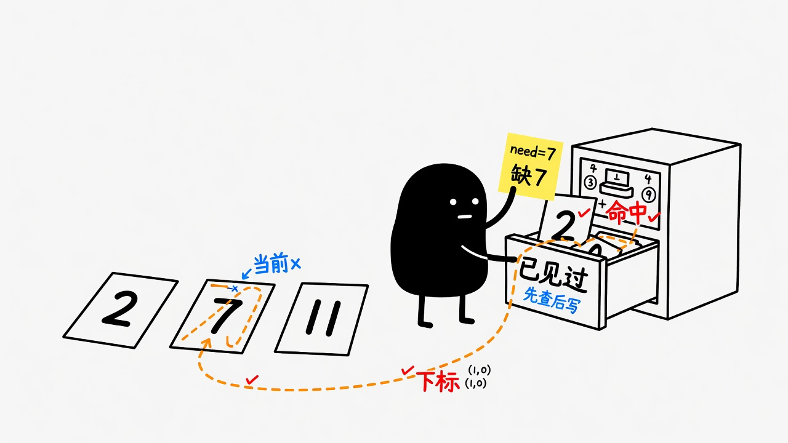
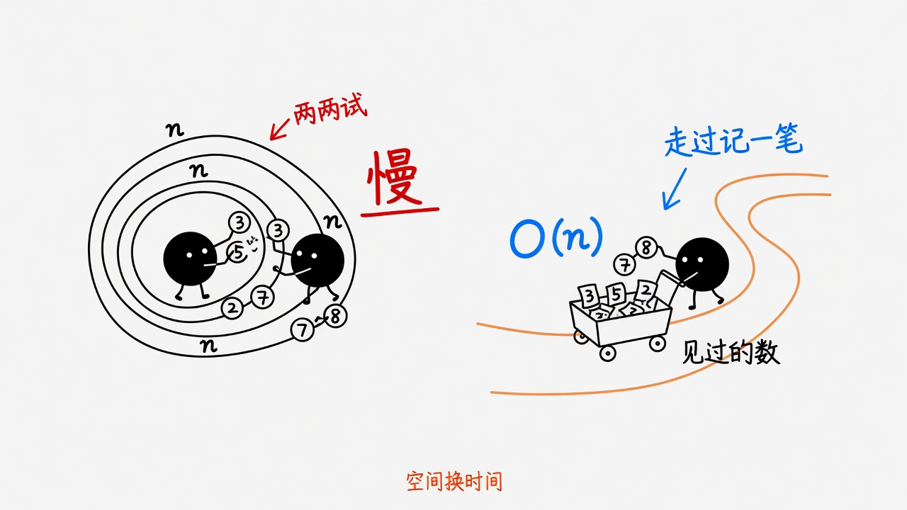

本页不是「背最优模板」，而是先搞清楚： 真实问题长什么样 → 有哪些解法、各自代价 → 为何主推某一解 → 再测理解。 测验全部作答后统一提交；作答过程中不公布对错。 全对会把下一步提示复制到剪贴板；有错则展开解析，可「再来一次」。
抽象：在一堆「可索引的记录」里，找两条记录，使它们的某个数值指标满足二元关系（这里是求和）。
哈希不是为了「显得高级」。当你需要反复查询「有没有出现过某个值」， 且查询次数与 n 同阶时，用哈希是在付 O(n) 空间，换「少扫很多遍」的时间。 若 n 极小、或内存极紧、或不允许额外空间，暴力可能更合适——这是工程取舍，不是输赢。
先理解每条路在优化什么，再选主推。主推 ≠ 唯一正确。
对每个 i，向后扫 j，检查和是否为 target。
何时够用：n 很小（如 < 100）、原型验证、面试先写对再优化。
思维：直接翻译题意，建立正确性基线。
若只关心「两个值」而非原下标，可排序后两头夹。本题要下标，需带着原 index 排序。
何时想：后续 3Sum/最接近三数等「有序空间上的配对」一族。
代价：排序改变了扫描顺序；实现比哈希啰嗦一点。
扫到 x 时查 need = target - x 是否已出现；先查后写。
在优化什么：把「在已见集合里找补数」从线性扫变成均摊 O(1) 查询。
应用迁移：任何「当前元素 + 历史集合」的配对问题。
先全部入库再查。同值两次（如 [3,3]）时，表要能区分两个下标或存列表。
教学价值：理解「索引结构先建后查」；实现上通常不如一遍干净。
| 解法 | 换到了什么 | 丢掉了什么 |
|---|---|---|
| 暴力 | 零额外结构、思路直白 | 时间 |
| 排序+双指针 | 有序域上的线性扫 | 原序；实现带索引时变重 |
| 哈希 | 查询速度 | 额外内存；哈希常数 |
样例: nums=[2,7,11,15], target=9 i=0 x=2 need=7 → 空表，记 2→0 i=1 x=7 need=2 → 命中 0 → [0,1]
配图


技巧服务于约束；先问「数据从哪来、有多大、要下标还是值、能否改数组」。
请完成全部题目后点底部「提交测验」。提交前选项可以改，但不会显示对错。
Q1. 本题要求返回的是？
Q2. nums=[3,2,4], target=6 的合法下标？（写成 i,j）
Q3. 一遍哈希主推解法时间复杂度？
Q4. 哪些说法正确？（多选）
Q5. 扫到 x 时，在表里查的关键量常叫？（填 need / complement）
Q6. 一遍哈希对当前 x 更稳妥的顺序？
Q7. 为什么本题值得学哈希，而不是「永远暴力就好」？